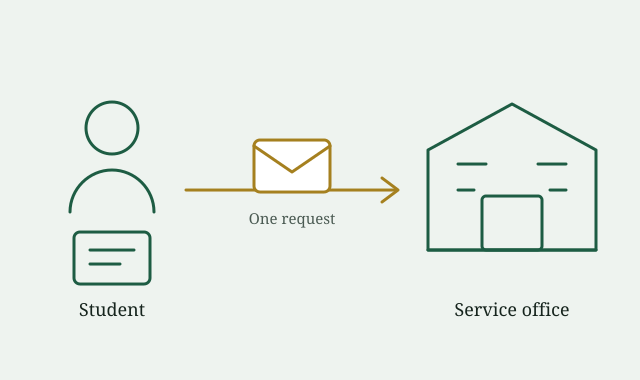

Why it was developed
Service requests reach offices through too many channels, so a request can be lost between a desk, an inbox and a phone. USRS collects every request in one form with the details the handling office needs.
About the portal
USRS replaces scattered paper slips, inboxes and personal messages with one structured student service experience.
USRS is a student service request portal built for a university front office. It gives students one place to find services, send the right details and understand where their request goes.

Service requests reach offices through too many channels, so a request can be lost between a desk, an inbox and a phone. USRS collects every request in one form with the details the handling office needs.
Students can send a request outside office hours, from a phone, without travelling to campus. The form asks for essential information up front.
Requests arrive sorted by category and routed to one office. Each request becomes a record that can support workload and turnaround tracking.
This is the Week 1-3 build of a progressive coursework project: the interface, responsive layout and client-side JavaScript. Stored requests and an office dashboard are planned for later weeks.